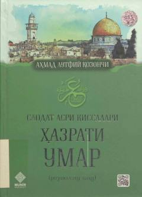

HUBuyuk va odil xalifa hazrati Umar roziyallohu anhuning hayoti va fazilatlariga bag'ishlangan asar.
Ushbu kitob Islom dinining buyuk va odil xalifasi hazrati Umar roziyallohu anhuning hayoti, fazilatlari va adolatli boshqaruvi haqida hikoya qiladi. Asar uning Islomni qabul qilganidan keyingi hayot yo'li, xalqqa xizmat qilishdagi namunalari va shaxsiy fazilatlarini ochib beradi. Kitob keng kitobxonlar ommasiga mo'ljallangan bo'lib, tarixiy-diniy ma'rifiy xarakterga ega.